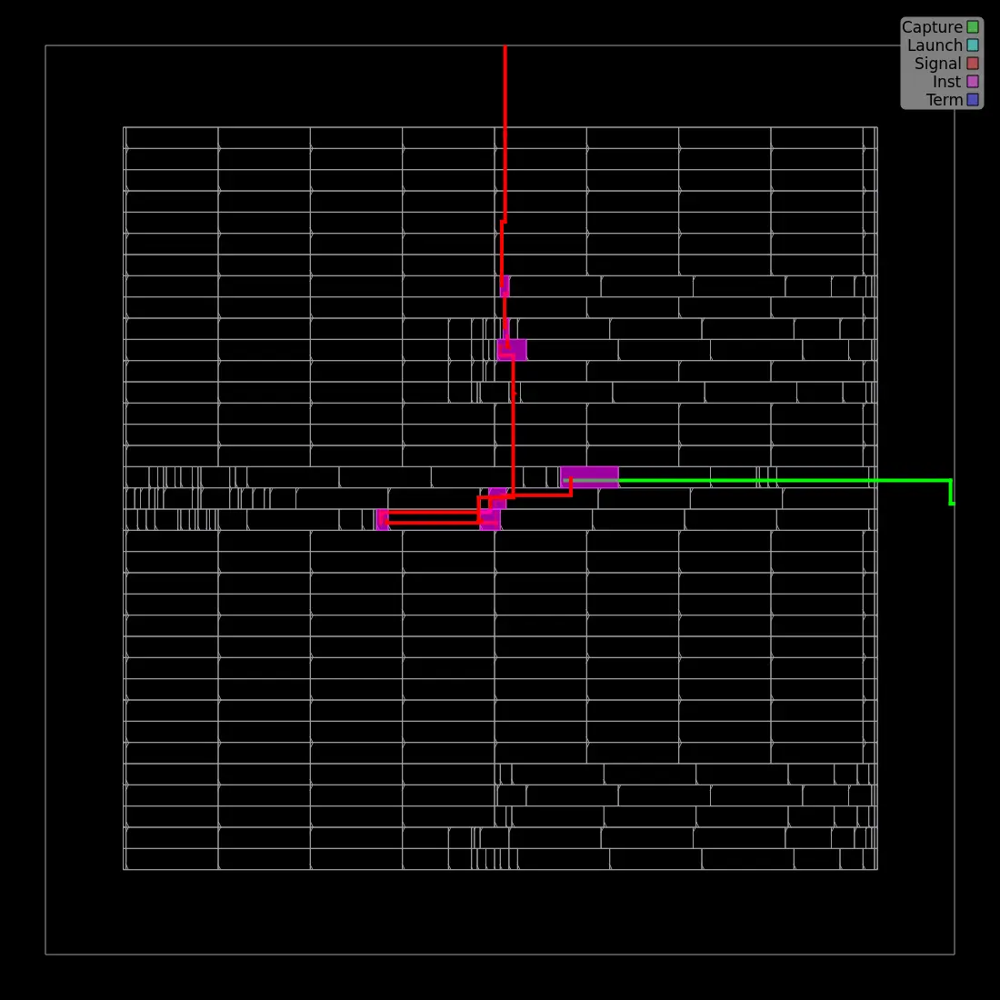
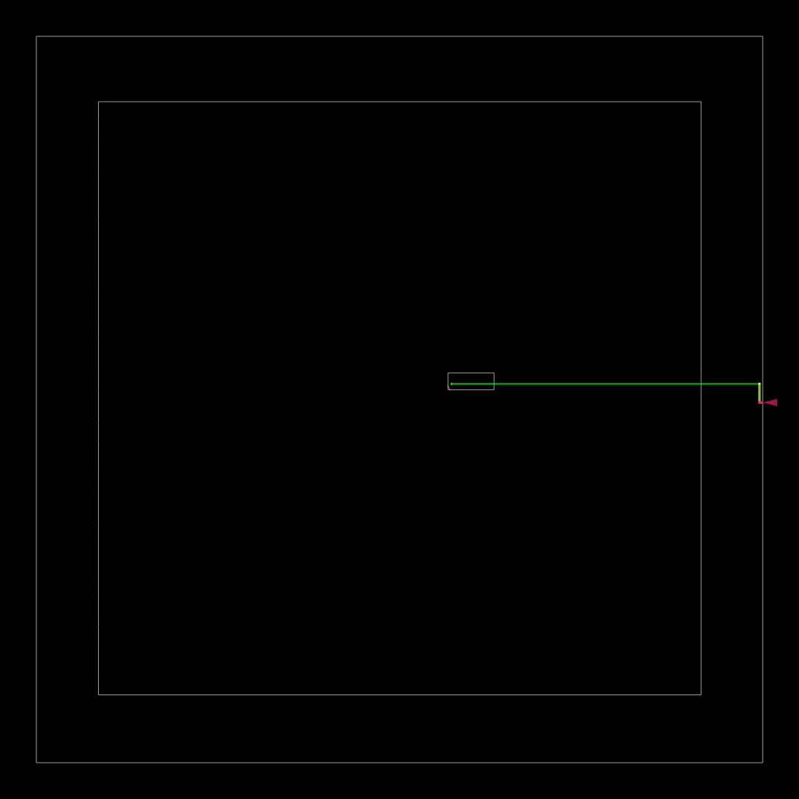

0. Part 5 的目的
1. 目前 Sign-off 狀態
2. Part 4 → Part 5 輸入檔
| 檔案 | Part 5 用途 |
|---|---|
6_final.odb | OpenROAD final database，可重新載入分析。 |
6_final.def | 最終 placement/routing geometry。 |
6_final.gds | 最終版圖，交給 KLayout / DRC / LVS flow。 |
6_final.spef | 寄生 R/C；post-layout timing 的關鍵輸入。 |
6_final.sdc | 最終 timing constraints。 |
6_final.v | post-layout gate-level netlist。 |
1_synth_lec.v / 6_final_lec.v | 前後 netlist 的 formal equivalence handoff。 |
3. 第一步：確認 Final Artifacts 完整
ZIP 內已附 scripts/01_check_final_artifacts.sh。將它對 ORFS final results 目錄執行：
cd /OpenROAD-flow-scripts/flow
bash /path/to/Part5/scripts/01_check_final_artifacts.sh \
results/nangate45/binarization/base這一步只確認檔案存在且非空，不代表 timing、DRC、LEC 或 LVS 自動 PASS。
4. Post-Layout STA：看什麼？
Place & Route 後，wire 已經有實際幾何，因此可以透過 SPEF 的 parasitic R/C 重新評估 delay。這就是為什麼 Part 5 不只看 synthesis timing。
cd Part5_PostLayout_Signoff_Verification_Complete/scripts
./02_extract_sta_summary.sh ../reports/6_finish.rpt| 指標 | 本次實際結果 | 判讀 |
|---|---|---|
| TNS | 0.00 ns | 沒有累積 negative slack |
| WNS | 0.00 ns | summary 無 negative slack |
| Worst slack | +7.73 ns | 100 MHz constraint 通過 |
| Minimum period | 2.27 ns | 工具估計可再縮短 clock period |
| Fmax | 440.06 MHz | 由 final timing report 推估 |
| Setup / Hold | 0 / 0 | 沒有 setup / hold violation |
展開本次 6_finish.rpt
==========================================================================
finish report_tns
--------------------------------------------------------------------------
tns max 0.00
==========================================================================
finish report_wns
--------------------------------------------------------------------------
wns max 0.00
==========================================================================
finish report_worst_slack
--------------------------------------------------------------------------
worst slack max 7.73
==========================================================================
finish report_clock_min_period
--------------------------------------------------------------------------
clk period_min = 2.27 fmax = 440.06
==========================================================================
finish report_clock_skew
--------------------------------------------------------------------------
Clock clk
No launch/capture paths found.
==========================================================================
finish report_checks -path_delay min
--------------------------------------------------------------------------
Startpoint: pix_in[6] (input port clocked by clk)
Endpoint: pix_out$_DFF_PN0_ (rising edge-triggered flip-flop clocked by clk)
Path Group: clk
Path Type: min
Fanout Cap Slew Delay Time Description
-----------------------------------------------------------------------------
0.00 0.00 clock clk (rise edge)
0.00 0.00 clock network delay (propagated)
2.00 2.00 ^ input external delay
1 2.73 0.00 0.00 2.00 ^ pix_in[6] (in)
pix_in[6] (net)
0.00 0.00 2.00 ^ input7/A (BUF_X1)
1 3.28 0.01 0.02 2.02 ^ input7/Z (BUF_X1)
net7 (net)
0.01 0.00 2.02 ^ _57_/A (HA_X1)
2 3.70 0.01 0.02 2.04 v _57_/S (HA_X1)
_09_ (net)
0.01 0.00 2.04 v _52_/A2 (NAND2_X1)
1 1.71 0.01 0.02 2.06 ^ _52_/ZN (NAND2_X1)
_33_ (net)
0.01 0.00 2.06 ^ _54_/C1 (OAI221_X1)
1 1.50 0.01 0.02 2.07 v _54_/ZN (OAI221_X1)
_00_ (net)
0.01 0.00 2.07 v pix_out$_DFF_PN0_/D (DFFR_X1)
2.07 data arrival time
0.00 0.00 clock clk (rise edge)
0.00 0.00 clock source latency
1 3.94 0.00 0.00 0.00 ^ clk (in)
clk (net)
0.00 0.00 0.00 ^ pix_out$_DFF_PN0_/CK (DFFR_X1)
0.00 0.00 clock reconvergence pessimism
0.00 0.00 library hold time
0.00 data required time
-----------------------------------------------------------------------------
0.00 data required time
-2.07 data arrival time
-----------------------------------------------------------------------------
2.07 slack (MET)
==========================================================================
finish report_checks -path_delay max
--------------------------------------------------------------------------
Startpoint: threshold[7] (input port clocked by clk)
Endpoint: pix_out$_DFF_PN0_ (rising edge-triggered flip-flop clocked by clk)
Path Group: clk
Path Type: max
Fanout Cap Slew Delay Time Description
-----------------------------------------------------------------------------
0.00 0.00 clock clk (rise edge)
0.00 0.00 clock network delay (propagated)
2.00 2.00 v input external delay
1 2.18 0.00 0.00 2.00 v threshold[7] (in)
threshold[7] (net)
0.00 0.00 2.00 v input17/A (BUF_X1)
1 1.73 0.01 0.02 2.02 v input17/Z (BUF_X1)
net17 (net)
0.01 0.00 2.02 v _38_/A (INV_X1)
1 3.52 0.01 0.02 2.04 ^ _38_/ZN (INV_X1)
_13_ (net)
0.01 0.00 2.04 ^ _59_/B (HA_X1)
3 5.96 0.04 0.07 2.10 ^ _59_/S (HA_X1)
_15_ (net)
0.04 0.00 2.11 ^ _50_/A1 (AND4_X2)
1 2.21 0.01 0.06 2.16 ^ _50_/ZN (AND4_X2)
_31_ (net)
0.01 0.00 2.16 ^ _51_/A (OAI21_X1)
1 2.23 0.01 0.02 2.18 v _51_/ZN (OAI21_X1)
_32_ (net)
0.01 0.00 2.18 v _54_/B2 (OAI221_X1)
1 1.57 0.03 0.05 2.23 ^ _54_/ZN (OAI221_X1)
_00_ (net)
0.03 0.00 2.23 ^ pix_out$_DFF_PN0_/D (DFFR_X1)
2.23 data arrival time
10.00 10.00 clock clk (rise edge)
0.00 10.00 clock source latency
1 3.94 0.00 0.00 10.00 ^ clk (in)
clk (net)
0.00 0.00 10.00 ^ pix_out$_DFF_PN0_/CK (DFFR_X1)
0.00 10.00 clock reconvergence pessimism
-0.04 9.96 library setup time
9.96 data required time
-----------------------------------------------------------------------------
9.96 data required time
-2.23 data arrival time
-----------------------------------------------------------------------------
7.73 slack (MET)
==========================================================================
finish report_checks -unconstrained
--------------------------------------------------------------------------
Startpoint: threshold[7] (input port clocked by clk)
Endpoint: pix_out$_DFF_PN0_ (rising edge-triggered flip-flop clocked by clk)
Path Group: clk
Path Type: max
Fanout Cap Slew Delay Time Description
-----------------------------------------------------------------------------
0.00 0.00 clock clk (rise edge)
0.00 0.00 clock network delay (propagated)
2.00 2.00 v input external delay
1 2.18 0.00 0.00 2.00 v threshold[7] (in)
threshold[7] (net)
0.00 0.00 2.00 v input17/A (BUF_X1)
1 1.73 0.01 0.02 2.02 v input17/Z (BUF_X1)
net17 (net)
0.01 0.00 2.02 v _38_/A (INV_X1)
1 3.52 0.01 0.02 2.04 ^ _38_/ZN (INV_X1)
_13_ (net)
0.01 0.00 2.04 ^ _59_/B (HA_X1)
3 5.96 0.04 0.07 2.10 ^ _59_/S (HA_X1)
_15_ (net)
0.04 0.00 2.11 ^ _50_/A1 (AND4_X2)
1 2.21 0.01 0.06 2.16 ^ _50_/ZN (AND4_X2)
_31_ (net)
0.01 0.00 2.16 ^ _51_/A (OAI21_X1)
1 2.23 0.01 0.02 2.18 v _51_/ZN (OAI21_X1)
_32_ (net)
0.01 0.00 2.18 v _54_/B2 (OAI221_X1)
1 1.57 0.03 0.05 2.23 ^ _54_/ZN (OAI221_X1)
_00_ (net)
0.03 0.00 2.23 ^ pix_out$_DFF_PN0_/D (DFFR_X1)
2.23 data arrival time
10.00 10.00 clock clk (rise edge)
0.00 10.00 clock source latency
1 3.94 0.00 0.00 10.00 ^ clk (in)
clk (net)
0.00 0.00 10.00 ^ pix_out$_DFF_PN0_/CK (DFFR_X1)
0.00 10.00 clock reconvergence pessimism
-0.04 9.96 library setup time
9.96 data required time
-----------------------------------------------------------------------------
9.96 data required time
-2.23 data arrival time
-----------------------------------------------------------------------------
7.73 slack (MET)
==========================================================================
finish report_check_types -max_slew -max_cap -max_fanout -violators
--------------------------------------------------------------------------
==========================================================================
finish max_slew_check_slack
--------------------------------------------------------------------------
0.15770065784454346
==========================================================================
finish max_slew_check_limit
--------------------------------------------------------------------------
0.1985349953174591
==========================================================================
finish max_slew_check_slack_limit
--------------------------------------------------------------------------
0.7943
==========================================================================
finish max_fanout_check_slack
--------------------------------------------------------------------------
1.0000000150474662e+30
==========================================================================
finish max_fanout_check_limit
--------------------------------------------------------------------------
1.0000000150474662e+30
==========================================================================
finish max_capacitance_check_slack
--------------------------------------------------------------------------
18.14134407043457
==========================================================================
finish max_capacitance_check_limit
--------------------------------------------------------------------------
20.904499053955078
==========================================================================
finish max_capacitance_check_slack_limit
--------------------------------------------------------------------------
0.8678
==========================================================================
finish max_slew_violation_count
--------------------------------------------------------------------------
max slew violation count 0
==========================================================================
finish max_fanout_violation_count
--------------------------------------------------------------------------
max fanout violation count 0
==========================================================================
finish max_cap_violation_count
--------------------------------------------------------------------------
max cap violation count 0
==========================================================================
finish setup_violation_count
--------------------------------------------------------------------------
setup violation count 0
==========================================================================
finish hold_violation_count
--------------------------------------------------------------------------
hold violation count 0
==========================================================================
finish report_checks -path_delay max reg to reg
--------------------------------------------------------------------------
No paths found.
==========================================================================
finish report_checks -path_delay min reg to reg
--------------------------------------------------------------------------
No paths found.
==========================================================================
finish critical path target clock latency max path
--------------------------------------------------------------------------
0.0002
==========================================================================
finish critical path target clock latency min path
--------------------------------------------------------------------------
0.0002
==========================================================================
finish critical path source clock latency min path
--------------------------------------------------------------------------
0.0000
==========================================================================
finish critical path delay
--------------------------------------------------------------------------
2.2325
==========================================================================
finish critical path slack
--------------------------------------------------------------------------
7.7276
==========================================================================
finish slack div critical path delay
--------------------------------------------------------------------------
346.141097
==========================================================================
finish report_power
--------------------------------------------------------------------------
Group Internal Switching Leakage Total
Power Power Power Power (Watts)
----------------------------------------------------------------
Sequential 6.58e-07 3.04e-08 8.57e-08 7.74e-07 15.6%
Combinational 1.70e-06 1.19e-06 1.30e-06 4.19e-06 84.4%
Clock 0.00e+00 0.00e+00 0.00e+00 0.00e+00 0.0%
Macro 0.00e+00 0.00e+00 0.00e+00 0.00e+00 0.0%
Pad 0.00e+00 0.00e+00 0.00e+00 0.00e+00 0.0%
----------------------------------------------------------------
Total 2.36e-06 1.22e-06 1.39e-06 4.96e-06 100.0%
47.5% 24.5% 27.9%
5. SPEF：為什麼是 Post-Layout 的關鍵
6_final.spef 描述 routed nets 的寄生 capacitance 與 resistance。RTL 階段不知道真正 wire 長度；routing 完成後才有較可信的 interconnect delay。Part 5 將這個檔案保留在 inputs/，可用於 OpenSTA/OpenROAD post-layout STA。
ls -lh inputs/6_final.spef
head -40 inputs/6_final.spef6. Physical Checks：Route DRC / Antenna
cd scripts
./03_check_physical_reports.sh ../reports本次 5_route_drc.rpt 為 0 bytes；grt_antennas.log 為 0 bytes；drt_antennas.log 為 0 bytes。對這些 0-byte 檔案最安全的說法是「該 report/log 沒有列出 violation」，不要把它擴大解讀成所有 foundry sign-off DRC 都已完成。
7. LEC：Logic Equivalence Checking
LEC 要回答的是：經過 synthesis、optimization、buffer insertion、CTS/P&R 後，邏輯功能是否仍與參考設計等價？
cd scripts
./04_check_lec_handoff.sh ../inputs1_synth_lec.v 與 6_final_lec.v，但「檔案存在」不是 LEC PASS。下一個實作步驟應在 ORFS/正式 formal tool 中執行 equivalence check，並把明確的 PASS log 放入 reports/。8. LVS：Layout vs. Schematic
LVS 比較「從 layout 抽出的電路」與「reference schematic/netlist」是否一致。它與 LEC 不同：LEC 是邏輯等價；LVS 是 physical extraction 後的 connectivity/device equivalence。
9. Power / IR Drop
Final report 的 total power estimate 約 4.96 µW。由於這是非常小的教學 design，而且 activity/clock model 有限制，應把它當作此 flow 的 estimate，而不是晶片量測功耗。

cells、PDN、routing 與 I/O 的完整疊圖。

詳細繞線結果。

STA worst path 疊在 physical placement 上。

routing congestion heatmap。

IR-drop heatmap；本次圖例最大約 82.699 µV。

最終 clock network。
10. Worst Path 如何與 Layout 對起來
final_worst_path.webp 把 timing path 直接畫在 placement 上，因此可以從 STA 的「數字」連回 physical path。這是 Part 5 最重要的跨層觀念：
本次 final critical path delay 約 2.2325 ns，10 ns constraint 下 worst slack 為 +7.73 ns。
11. 一鍵產生 Sign-off Snapshot
cd scripts
./05_signoff_snapshot.sh ../reports這支 script 不會偽造 sign-off；它只把現有證據整理成 snapshot，並明確標示 LEC/LVS 尚需正式 PASS log。
12. 最終 Sign-off Checklist
| 項目 | 目前狀態 | 完成條件 |
|---|---|---|
| RTL / mapped functional verification | ✅ 已完成 | 前段 mapped GLS 65,536 pixels，Mismatch=0 |
| Final GDS generation | ✅ 已完成 | 6_final.gds |
| Post-layout STA | ✅ PASS | setup/hold=0 violations，worst slack +7.73 ns |
| Electrical constraints | ✅ PASS | slew/fanout/cap violations = 0 |
| Route DRC report | ✅ 無 violation 列出 | 5_route_drc.rpt 為空 |
| Antenna reports | ✅ 無 violation 列出 | 現有 antenna logs 為空 |
| Formal LEC | ⚠️ 待正式 PASS log | equivalence checker 明確 PASS |
| LVS | ⚠️ 待執行 | PDK LVS flow 明確 PASS |
| Foundry sign-off DRC | ⚠️ 教學 flow 不等同 foundry sign-off | 正式 sign-off deck PASS |
13. Part 5 ZIP 內容
Part5_PostLayout_Signoff_Verification_Complete/
├── index.html
├── README.txt
├── inputs/
│ ├── 6_final.gds / .def / .odb
│ ├── 6_final.v / .sdc / .spef
│ ├── 1_synth_lec.v
│ └── 6_final_lec.v
├── reports/
│ ├── 6_finish.rpt
│ ├── 5_route_drc.rpt
│ ├── 5_global_route.rpt
│ ├── 4_cts_final.rpt
│ └── ...
├── images/
│ ├── final_all.webp
│ ├── final_routing.webp
│ ├── final_worst_path.webp
│ ├── final_congestion.webp
│ └── final_ir_drop.webp ...
├── scripts/
│ ├── 01_check_final_artifacts.sh
│ ├── 02_extract_sta_summary.sh
│ ├── 03_check_physical_reports.sh
│ ├── 04_check_lec_handoff.sh
│ └── 05_signoff_snapshot.sh
└── docs/
└── SIGNOFF_STATUS.md